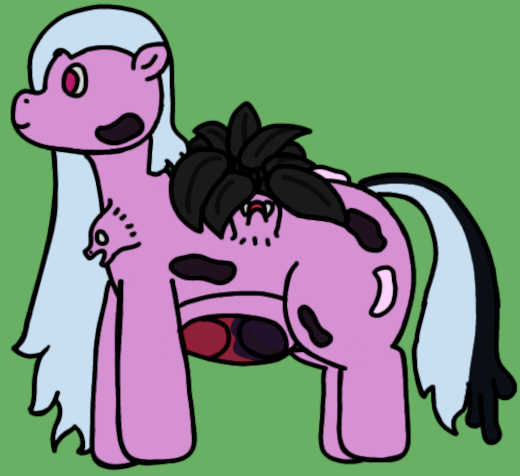

| Source | Resurrected aggregate puppet mass |
| Durability | 14/10 |
| Strength | Physical: 9/10 Psionic: 7/10 Magical: 0/10 |
| Specials | Gangrenous puppet creation Gangrene manipulation |
| Personality | Variable; tends towards clinginess |
Gangrenous Archons represent the culmination of many long-deceased puppets being forcefully resurrected with powerful magic. While they lose access to magic, they have greatly enhanced spawning abilities over other Archons with a wide spread of influenced puppet types.
Gangrenous Archons, so named for the large pockets of gangrene that make up parts of their body, are a variant of a wider class of Archons specializing in physical durability and puppet spawning. Among their peers, their defining traits number more in what they lack than what they possess: They lack any sort of horn structure for conducting even simple magic. They do, however, have a large bed of dark-tainted verdant mass that grows on their backs, and correspondingly, they do show some reception to the verdant magics emitted by Cambrians and Cornucopiae.
As Archons, Gangrenous Archons primarily exist to increase the speed of growth of a puppet clan. Amidst their peers, they excel at this; whereas other archons seldom spawn more than one puppet as a time, Gangrenous Archons have been seen spawning up to six puppets in a single impulse; a feat owed to the uniquely bifurcated spawning orifice that occupies most of their stomach. They also possess the ability to take temporary psionic control of other puppets (though they of course cannot supersede the will of the Archmother, even among the puppets the archon itself has spawned), allowing the clan to more effectively coordinate multiple large-scale tasks.
While not strictly magical in nature, Gangrenous Archons do seem to possess some ability to manipulate gangrenous energy within their own bodies. This can lead to temporary feats of incredible strength on the archons' part, and is also believed to be why their already durable bodies knit so quickly. Their sphere of influence is, however, very limited, though they have been seen aiding the regeneration of other gangrenous puppets.
With a greater independence than normal puppets, Gangrenous Archons can display a considerable variety of behaviour depending on the individual's temperament. They do, however, have a tendency towards clinginess and typically abhor being alone; they will often seek out groups of other puppets, or even their Archmother, for no other reason than simple company; to which failing to find the target of their clinginess can lead to issues as the archon gets more and more upset.
Gangrenous Archons feature the widest variety of variant puppets, affecting seven in total and causing the creation of two new types of subpuppet in the process. A consistent pattern in their various mutations is a tendency towards greater durability and weaker specialied traits. The full list is:
Gangrene is a very strange energy that interacts with puppets in a variety of ways. It is known to directly harm spellcasting ability, as seen in Thresholds and Weirs, and even the Gangrenous Archons don't seem immune to these effects. However, due to its often homogenous nature, it regenerates quickly, and is very difficult to damage without simply eradicating an entire sample.
Gangrenous Archons themselves are one of a select few Archon types that can arise purely from a single Archmother's genetic code, being an aggregate of multiple puppets spawned by the same Archmother.
The Gangrenous Archons; my little shadows, as I sometimes call them. They vie for my attention more than just about any of the others; attention I'm more than happy to give, of course, though occasionally I'm not available to spend as much time as they'd like. Their other sisters can help stave off their loneliness, as can putting them in charge of large projects with lots of their siblings involved, but I always feel a bit guilty when I do so. If only I had more time...
Gangreous Archons were the first Archons to be conceptualized. The concept of a puppet that spawns other full puppets arose from the logistical nightmare of cases like Stellaris, where it's implied Hyacinth has somehow spawned multiple quadrillions of puppets all by themselves, which even accounting for subpuppets, is highly unlikely.
Gangrenous Archons in particular are a story creation, brought about from a mythos where Hyacinth is an eldritch sort of thing that has gone through cycles of living, dying, petrifying, and resurrecting. Gangrenous Archons are what happens when you try to brute force resurrecting dead puppet mass.
